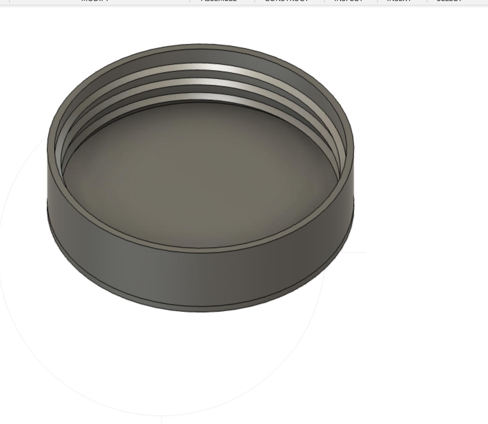
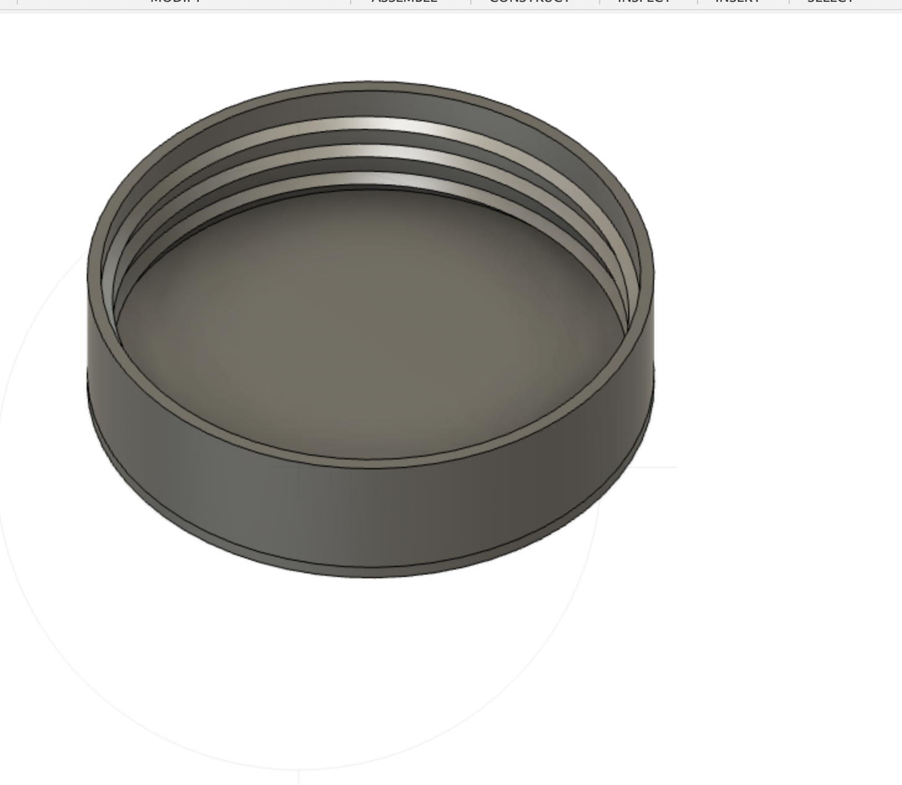
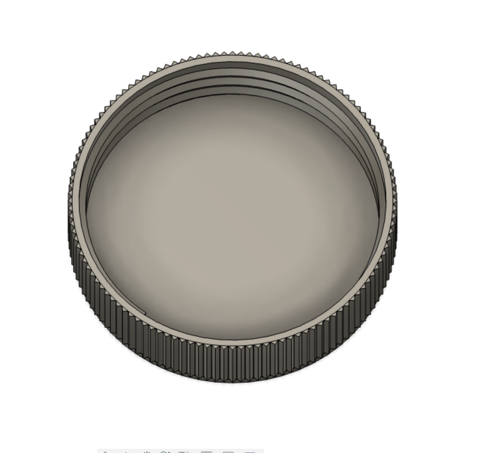

Fusion 360 Tutorial
Since this was my first time using Fusion or any CAD software, I decided to start with a simple tutorial to make a lego brick. If first made sure my display settings matched that of the tutorial tutorial and that my distance metric was set to mm. We first made a new component and then a new sketch, which is a 2D object that we can make into a 3D object later. I used the constraint tool to set the dimensions of the lego to match that given in the tutorial.
To make this 3D I used the extrude command, selecting the rectangle and typing out 9.6mm. This gives the block some thickness. I then used the keyboard shortcut c to create a circle on top of the block. I added a distance contraint to make sure that the circle was properly sized and positioned. I then extruded the circle and used the rectangular pattern feature and changed the pattern type to feature. I selected the edge of the block for the direction and selected four copies and 24mm for the distance. I then selected the other direction, and copied the row over giving us a lego brick.

Finally I used the shell command from the modify menu and selected the bottom face. I typed an inside thickness of 1.49mm. I finally created the indents on the inside of the lego that let them snap together using the same technique of distance contraining the circle, extruding, hollowing, and then using the pattern tool. As a nice final touch, I used the filet tool to click on the tops of all the studs on top of the lego and then gave them a filet of .2mm.
Household Objects
Bottle Cap
I decided on modeling two household objects. Namely, I wanted to make a sculpture out of disimilar objects, but realizing I was still very confused by fusion, decided on a simple sculpture - a bottle cap atop a battery. I also really was not sure what an aseembly was and asked all 3 TFs who said it just meant putting the objets together in the same space so I proceeded onwards. The first was a bottle cap since I wanted to challenge myself to create the ridges on the outside and also the custom threads on the inside. I started by measuring the bottle cap with calipers to get all of the dimensions of the internal and external radius, of the height, the ridges, and the spacing between the internal threads. I then sketched two circles, using the concentric constraint to make sure they were well centered, and extruded the ring it created.
Next came the difficult part of adding the internal ridges. There were two options, one to do it manually and one to use the internal threading tool. The internal threading tool didn't seem to play nice with custom threadings
and I figured I'd learn more by doing it manually so I chose to do it that way. I did this by using the create tool to create a spiral
centered at the center of the inside circle and with the same radius. I used my mesurements to set the number of spirals to 3, and the pitch to about 2mm and section size about 1.7mm. I made sure to make the
section type internal triangular and to use the join operation, which resulted in my custom threads! I added a cap on top to finish up the look.
 

Finally I tried to add ridges to the outside of the bottle cap. This, as it turns out, was really hard. It was hard to find what I wanted online even with the help of the TF and this ended up taking a very long time. I ended up making singular edge by drawing a triangle and extruding it on the outside of my cap. Then I used the pattern tool I had learned about to make instead a circlular pattern all around the outside edge using the center of my cpa as the center and the corresponding radius. This took me a while to figure out as it was not working like the rectangular pattern, and I had some issues with making sure the traingles went all the way to the material but I got it to work after some trial and error! 
Battery
The second item I decided on something easier which was a battery. I measured the dimensions and followed the same procedure of concentric circle-making and extruding. One intresting thing I learned here was you can "negative" extrude to get offsets into materials and you can also introduce a taper which proved helpful in making the battery look realistic.
Here they are assembled next to their real-life inspiration!
Press-Fit Construction
The final part of this assginment was a press-fit construction kit. I started off exploring the dimension-setting tool.
 as well as some of the constraint tools, namely tangent and midpoint
as well as some of the constraint tools, namely tangent and midpoint  . I measured using calipers the width of the cardboard at about 4.5mm. However, I needed to account for the kerf using my material on that given day with that specific laser. Kerf is
just the name for the width of material that is removed during the actual cutting process. In the case of something like a saw, its probably simple to estimate the kerf as just the width of the blade.
I learned that there are a few ways to measure kerf and that if can vary with material and even based on the status of the laser (namely, when I was using the laser that was apparently a bit broken, the kerf was much larger. I presume this was because the beam was not as focused as it should have been). One way
is essentially trial and error, cutting pieces with maybe 0.1mm, 0.5mm, and 0.9mm of extra space and testing what works best. What this means is that if I want to make a 4mm wide whole, I actually want to make it 4-(0.1/0.5/0.9 * 2)mm wide. The other way was
to make a part with a known dimension (such as a 20-mm square) and then carefully measure the actual width of said part using calipers. If the square is actually 19.5 mm, then your kerf is 0.5mm. Once you adjust for this kerf, you can create a 20mm square that is 20mm. Luckily, a partner had just done this for the same
material I was using and we were able to measure the kerf at about 0.5mm. Using this, I designed a notch that was centered and perpendicular.
After that I used the "move" tool to copy this notch to the other four sides and the clip tool to hollow out the inside of the notch. This gave me my first piece!
. I measured using calipers the width of the cardboard at about 4.5mm. However, I needed to account for the kerf using my material on that given day with that specific laser. Kerf is
just the name for the width of material that is removed during the actual cutting process. In the case of something like a saw, its probably simple to estimate the kerf as just the width of the blade.
I learned that there are a few ways to measure kerf and that if can vary with material and even based on the status of the laser (namely, when I was using the laser that was apparently a bit broken, the kerf was much larger. I presume this was because the beam was not as focused as it should have been). One way
is essentially trial and error, cutting pieces with maybe 0.1mm, 0.5mm, and 0.9mm of extra space and testing what works best. What this means is that if I want to make a 4mm wide whole, I actually want to make it 4-(0.1/0.5/0.9 * 2)mm wide. The other way was
to make a part with a known dimension (such as a 20-mm square) and then carefully measure the actual width of said part using calipers. If the square is actually 19.5 mm, then your kerf is 0.5mm. Once you adjust for this kerf, you can create a 20mm square that is 20mm. Luckily, a partner had just done this for the same
material I was using and we were able to measure the kerf at about 0.5mm. Using this, I designed a notch that was centered and perpendicular.
After that I used the "move" tool to copy this notch to the other four sides and the clip tool to hollow out the inside of the notch. This gave me my first piece!
I then decided to do something a little more challenging. I was inspired by a cardboard sphere I saw on the internet and wanted to see if I could replicate the design. I followed to same procedures as above to create both a square "connecting" piece and a circular "edge" piece. The square piece was essentially the same as above. The circular piece, I used two concentric circles. Then I chopped the circle into four pieces and took one of those pieces. I took the notch from the square piece and centered it on either side and then used the cut tool to hollow it out. It turned out better than I could have imagined!